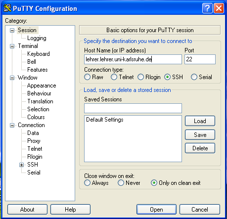
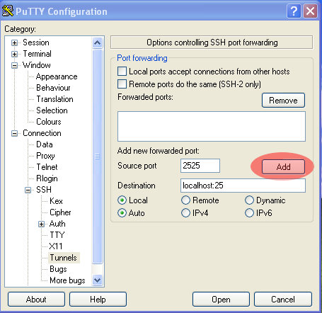

Sende E-Mails mit Thunderbird und SSH-Tunnel¶
Sie haben bereits ein Konto in Thunderbird eingerichtet, das per POP/IMAP die E-Mails empfängt? Dann werden hier die nötigen Schritte gezeigt, um auch das Senden von E-Mails über Thunderbird einzurichten.
Äquivalent funktioniert das natürlich auch über andere E-Mail-Programme.
Installieren Sie zunächst ein SSH-Client-Programm, wie es hier beschrieben wird.
SSH-Tunnel unter MAC und Linux¶
Öffnen Sie ein Terminal und verbinden Sie sich mit dem Lehrer-Server
mit Hilfe des folgenden Befehls. Beachten Sie die zusätzliche Option
-L 25:localhost:2525 die den Port 25 ihres Rechners auf den Port
2525 des Zielrechners (localhost ist dann der Lehrer-Server) tunnelt.
~$ ssh lehrer.lehrer.uni-karlsruhe.de -l za3966 -L 2525:localhost:25
Welcome to Ubuntu 16.04.2 LTS (GNU/Linux 4.4.0-62-generic x86_64)
* Documentation: https://help.ubuntu.com
* Management: https://landscape.canonical.com
* Support: https://ubuntu.com/advantage
0 Software-Pakete können aktualisiert werden.
0 Aktualisierungen sind Sicherheitsaktualisierungen.
You have mail.
Last login: Sun Jan 22 22:29:48 2017 from 95.114.99.20
za3966@lehrer:~$
Sie sind nun angemeldet.
Bemerkung
Der Tunnel besteht solange Sie angemeldet sind, auch wenn man diesen durch keinen weiteren Hinweis sehen kann.
SSH-Tunnel unter Windows¶
Öffnen Sie putty, geben folgende Daten ein und speichern danach die “Session”:

- Host Name:
lehrer.lehrer.uni-karlsruhe.de- Connection Type:
SSH
Der Port wird dadurch automatisch auf
22gestellt.
- Saved Sessions:
smtptunneloder einen beliebigen anderen Namen, z.B.lehrertunnelKlicken Sie danach auf “Save”.
Öffnen Sie nun in der linken Leiste die Auswahl “Connection” -> “SSH” -> “Tunnels” und geben diese Daten ein
- Source port:
2525
- Destination:
localhost:25
Klicken Sie danach auf die Schaltfläche “Add”, um eine Zeile
L2525 localhost:25in der Liste “Forwarded ports” in putty zu sehen.Gehen Sie zurück in der linken Leiste auf “Session”, klicken wieder auf Ihren Sessionnamen, z.B. “smtptunnel” und klicken nochmals auf “Save”. Jetzt ist die Tunnelkonfiguration gespeichert.
Öffnen Sie die Verbindung, in dem Sie auf “Open” klicken und Sie sich mit Ihrem Benutzernamen und Passwort anmelden.

Bemerkung
Der Tunnel besteht solange Sie angemeldet sind, auch wenn man diesen durch keinen weiteren Hinweis sehen kann. Lassen Sie also dieses Fenster geöffnet.
Thunderbird zum Versenden einrichten¶
Bei anderen Mailprogrammen funktioniert es analog, Sie müssen die Einstellungen nur finden.
Wenn Sie erstmalige Einrichtung wie hier beschrieben vorgenommen haben, müssen Sie nichts weiter tun, das Versenden von E-Mails wird bei bestehendem Tunnel funktionieren.
Andernfalls finden Sie im Menü unter Einstellungen -> Konten-Einstellungen die SMTP-Einstellungen unter Postausgangs-Server (SMTP) in der linken Leiste.
Ändern Sie hier den bestehenden Eintrag oder erstellen einen neuen mit
den im Bild angegebenen Werten. Der Eintrag localhost unter
Server bedeutet in diesem Fall, dass Sie sich mit ihrem eigenen
Computer verbinden (der das Versenden über den Tunnel schickt).
Überprüfen Sie in den Konten-Einstellungen zu Ihrem Konto (hier: za3966@lehrer.uni-karlsruhe.de), ob der entsprechend konfigurierte Postausgangs-Server auch ausgewählt ist.
Vorname.Nachname E-Mail-Adresse verwenden¶
Es bietet sich an, zusätzlich zu Ihrer kryptischen E-Mail-Adresse
zaxxx@lehrer.uni-karlsruhe.de die Alias-E-Mail-Adresse zu
verwenden. Öffnen Sie die Konten-Einstellungen und klicken Sie
unterhalb der Auswahl des Postausgangs-Servers den Knopf Weitere
Identitäten.
Fügen Sie eine neue Identität hinzu und tragen Sie die E-Mail-Adresse
nach dem Muster Vorname.Nachname@lehrer.uni-karlsruhe.de hinzu.
Klicken Sie auf Als Standard festlegen um immer mit dieser Identität E-Mails zu versenden, die über den Lehrer-Server gehen. Beim Versenden von E-Mails können Sie nun bei jeder E-Mail festlegen, unter welcher Identität sie verschicken wollen.